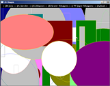
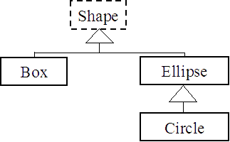
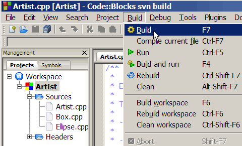
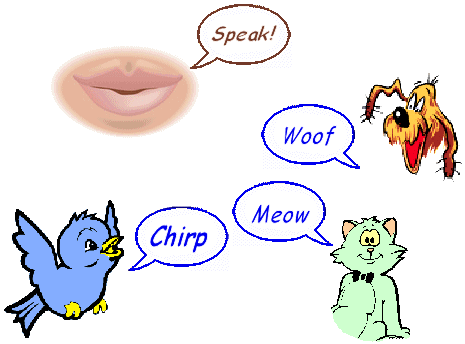

Several features of C++ improve on C. The "Artist" example uses two such features: object-orientation and dynamic collections (The dynamic collections are part of the Standard Templates Library, the STL).
. Some programming tasks are much
easier to perform using classes and inheritance, the essential tools of
object orientation. This is because the program situation (the problem
domain) is naturally object-oriented. The program "Shapes" is an
example of this.
. Dynamic collections (also called "containers") are storage spaces,
just like arrays are storage spaces. Unlike arrays, dynamic collections
can grow indefinitely as the program runs (as long as there is still
some memory available). That's why they are called "dynamic". "Artist",
uses a "vector", one type of dynamic collection, to store an indefinite
number of shapes.
The program allows the creation of
artistic screens composed of many coloured shapes drawn on top of each
other.
- A variety of basic shapes are created and displayed one by one by
pressing different keys. Once created each shape is stored into a
sequential collection (a vector).
- All shapes in the collection can be drawn sequentially (on top of
each other) at any time to give a colourful composition.
- At any time more shapes may be added, or the vector can be emptied
and all shapes wiped off the screen.
As we build "Artist" and see how the program works, we also learn how
to build object-oriented C++ projects composed of several classes. We
discover the advantages of class inheritance. We learn how to use
vectors and the STL, We also see how to use WinBGIm, a simple library
of 2D graphics functions.
Shapes is a deceptively simple C++ program. It would be MUCH!! harder to implement in C without object-orientation. However to be able to design and write such "simple magic" ourselves, we have to understand key concepts of object orientation expressed in the weird and wonderful terms below.
Key Concepts: inheritance | base class | derived class | virtual method | abstract class | abtract method | virtual destructor | polymorphism | vector | STL
Before we start
Create a "Artist" subdirectory somewhere you choose to build this example.
Get the example from the zip file:  ArtistForWinBGIm.zip
Save the archive into the new "Artist"
subdirectory, and extract the source files from the archive.
___________
Creating the "Shapes" project
With Code::Blocks, create a new WinBGIm project in
the new "shapes" directory. Call the project Artist.
In the project "management" screen, right-click on the project name and
select [Add files...]. Select and add all the ".cpp" and ".h" files to
the project.
It shows 3 .cpp files shapes.cpp,
Box.cpp and Ellipse.cpp,
but there is more to this
project than meets the eye:
There are 4 class header files in the project directory: Shape.h,
Box.h, Ellipse.h, Circle.h.
Each of these contains the
class declaration for a class of the same name. The shapes project uses
these 4 C++ classes.
- The header (.h) files are the
public face of classes. They contain the class declaration. A class
declaration states what data each object of that class contains, what
functions (called methods for
classes) can be called for each object. It gives the
functions prototypes (the
methods signatures).
- The .cpp files on the other hand define
the class methods. They store the code for the functions, at
least the most complex functions, as basic functions are allowed to be
defined inline in the class header.
|
The Shapes project is composed of
4 classes: We say that a derived class (also called a sub-class) inherits from a base class (also called a superclass). The project uses derivation (public inheritance in C++ terms) between these classes to make use of the fact that boxes, ellipses and circles are shapes. The diagram on the right uses a triangle to indicate the inheritance relationship. (This conforms with the UML notation for class relationships.) As we can see, Box is a Shape, Ellipse is a Shape, Circle is an Ellipse (and therefore also is a Shape). The Shape class is drawn with dashes to indicate it is an abstract class (see further down). |
 |
Inheritance represents the is_a relationship between classes
Notice
that there are no .cpp files for classes
Shape and Circle. This is because the code for these classes is so
basic that it is completely defined inline
within the Shape.h and Circle.h
headers.
This is indicated by the use of the inline
keyword at the start of functions declarations in the header.
___________
Building and running the "Artist" executable
You can open any of the project files that are part of the project by double-clicking on their name in the project window.
Before we do this however, let us compile and link "Artist", and play a little with the program to get familiar with it:
|
Select Build. Code::Blocks compiles the 4 ".cpp" files with the
headers that they
|
 |
You can now run the program by clicking on the executable filename in a file manager, by calling the program at a console, or within Code::Blocks by clicking on Build->Run.
The program gives some basic instructions on top of the screen:
The user can select 3 kinds of shapes by pressing the associated
key, a Box (a rectangle with vertical and horizontal
sides), an Ellipse,
or a Circle. The shape
dimensions and colors are determined by the random number generator.
The selected shape is shown on the screen. A "burst"
of shapes can be obtained by leaving the finger on the key for a short
time.
The selected shapes are added (as Shape pointers) to a vector
container. All the shapes in the collection can be shown at once by
pressing the | [D]raw
Shapes | option key (D).
___________
How does it work?
We will first examine the driver "Artist.cpp"
(the code that makes all the classes work together).
"Artist" uses the standard C random number generator function rand()
to obtain values for the geometric dimensions of each shape requested
by the user.
When B, E, or C
are pressed:
- An instance of the requested shape class (a box,
or ellipse, or circle object) is created using new and passing the geometric
data to the class constructor.
- The sceen is then cleared and the new shape is drawn with
GrClearClipBox(BG_COLOR); // Clears the screen, except the menu bar- A pointer to the
created object (
theShape->draw(); // Show only the new shape
theShape) is placed inside the
collection of shapes (a vector called shapes)
with
shapes.push_back(theShape);
The beauty of
vectors is that they grow as needed. They can never fail when adding
data, unlike arrays that can crash your program if it tries to store
more into an array than the array can contain.
In this project there is no way of knowing in advance how many shapes
the user will request, therefore a vector is all indicated. The vector
of shapes is created as a local variable in the main() function with:
vector<Shape
*> shapes; // Collection of
stored shapes
The
parameter between the angle brackets < and > is called a
"type parameter". It indicates what variable type (Shape pointers in
this case) the shapes vector will store.
When D is
pressed:
- The screen is cleared, then the shapes in the vector are drawn
sequentially, one by one on top of each other in a for loop:
for(int i = 0; i <
numShapes; i++)
shapes[i]->draw();
When W is
pressed:
- The screen is wiped
clean, then the memory previously allocated to all the shapes in the
vector is released, each shape in its turn with:
for(int i = 0; i <
numShapes; i++)
delete shapes[i];
delete is passed the
Shape instance pointer previously created with new.
Notice
that we obtain how many shapes have been stored in the vector shapes
with the statement:
int
numShapes = shapes.size();
The vector at any time knows how many elements it contains... Easy!
___________
Into the Guts of Classes
The simplicity of this program is deceptive. It relies on the expressive power of inheritance and polymorphism available to C++ and to all object-oriented languages. Without object-orientation this code would be much more messy. Let's examine how shapes uses these features:
Inheritance
Boxes and ellipses are shapes.
The Box and Ellipse classes therefore inherit from the Shape class.
This is shown by the public inheritance in the class declarations:
class
Ellipse: public Shape
{
. . .
class Box : public Shape
{
Private and protected inheritance types also exist in C++. They are used extremely rarely and do not represent the is_a relationship between classes. We will ignore them in this document.
A circle is a kind
of ellipse (where the
two axes are of equal dimensions). Therefore
the Circle class inherits from the Ellipse class with:
class
Circle : public Ellipse
{
What inheritance means in practice is that all the code and
data that exist in the base class also exist in the derived class. It
has been "inherited" by the derived class.
There is no need for example to repeat the Ellipse draw()
method within the Circle code as the ellipse function of the same name,
inherited by Circle will do the job just as well.
If a function of a base class needs to be replaced by another with the same name and signature in the derived class, because the behaviour of the inherited function does not fit the expected behaviour of the derived class, this can be done simply by re-declaring the function in the derived class header and writing the new function code in the derived class .cpp file. We say in this case that the derived class function overrides the base class function.
For this to work however we must
declare the method in the base class header to be virtual. Briefly, this in an
instruction to the compiler to place the function address into a table
kept by the program called the "virtual table" or V-table. The virtual
table allows the program at runtime to find the proper function, even
though there may exist several functions with the same name and
signatures in the class hierarchy.
Note that the default
destructor is a special class function that must be
declared virtual in the base class. This allows the proper destructor
to be called when a derived class object falls out of scope or is
deleted. This is done in Shape with:
/**
* Default destructor must be virtual to support inheritance
*/
virtual ~Shape() {}
Shape is a special kind of class called an abstract
class.
No object of the abstract class Shape can be created as such. Shape
instances can be created, but they will be created as Circle, Ellipse,
or Box instances. This is because Shape has one method, draw(), that is declared
in the header, but never defined. draw()
is itself called an abstract method:
/**
* Draw is abstract. It must be implemented by derived classes.
*/
virtual
void draw() const
= 0;
This is achieved by declaring draw() to be virtual
and = 0.
Why bother with inheritance?
Inheritance saves coding. We can derive a new class from an existing
base class. By doing so we inherit all previously working code from the
base class. This saves work, is more efficient as the executable will
be smaller, and is safer since we re-use existing (and hopefully tested and solid)
code.
For example we could add a Square
class and make it inherit from Rectangle...
no need to re-write draw() then, as the mehod
inherited from Rectangle will work just fine for Square:
class
Square : public
Rectangle
{
But these advantages pale in comparison with the magic of polymorphism that inheritance enables.
Polymorphism
|
The same function may have a variety of behaviours depending on the category of the object (the class) that executes it. The "speak" function of Bird will probably chirp, but that of Dog is more likely to bark, etc... In object-oriented jargon this is referred to as polymorphism. The image on the right illustrates the polymorphism (the various forms) of speak. |
 |
For the object-oriented programmer, polymorphism is just short of magic:
- Create a class hierarchy where all derived classes override polymorphic methods (which must be virtual in c++) inherited from the base class, and with the exact same signature (for example draw() in "shapes").
- Store object instances of the various derived classes as a
collection (array, or STL
container) of base class pointers (a vector of Shape pointers in the
shapes project).
- When the program calls the polymorphic method of objects in the collection, the correct function will be selected and each object will exhibit its proper behaviour (Circle instances will draw as circles and Rectangle instances as rectangles).
In shapes, the polymorphic behaviour of each object stored in
the vector is invoked with the for loop:
for(int i = 0; i <
numShapes; i++)
shapes[i]->draw();
The -> is required because
each element in the vector is a pointer to a shape
instance.
WinBGIm
The simple 2D graphics library WinBGIm is used here to
actually
draw the shapes on the screen. The code is very simple.
As an example, the polymorphic (virtual) method draw() is overriden in
Ellipse with:
void Ellipse::draw() |
Functions setfillstyle(),
filledellipse(), setcolor(), and ellipse() are
part of the WinBGIm
function library. Their parameters are set from the various attributes
of the object that must be drawn.
Basic information about these and other functions in the WinBGIm
library is
given on the help menu: Help->Programer's
Help->WinBGIm Library in the Code::Blocks
EDU-Portable IDE.
- WinBGIm
is a 2D graphics drawing package for C or C++. Using WinBGIm does not
require event-driven programming; it is therefore very simple to use by
novice programmers. The library supports displaying shapes and images,
loading fonts and displaying text, catching mouse clicks and mouse
position and catching key-presses.
Despite its simplicity, WinBGIm offers all that is necessary for simple
computer games and simulation programs. It is an emulation of the
Borland
Graphical Interface (BGI) that was once used to write many games.
___________
- You'll understand really well how this code works by implementing
your own modifications and extensions to this example.